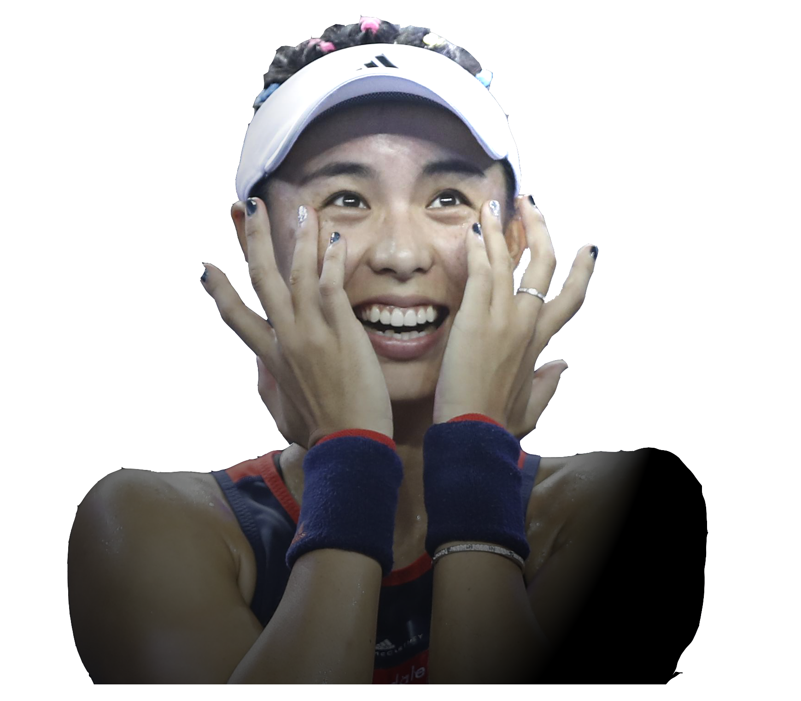

不停步
进步
本赛季的接连胜利让王蔷收获了更多球迷的喜爱和他人的关注。
但网球是非常残酷的运动，多种因素的综合成就了今天的王蔷。
从体制外的“个体户”到如今能够独当一面、代表国家的新一姐，
她潜伏多年、耐心等待，厚积薄发，终于迎来自己的登场时刻。

本赛季的接连胜利让王蔷收获了更多球迷的喜爱和他人的关注。
但网球是非常残酷的运动，多种因素的综合成就了今天的王蔷。
从体制外的“个体户”到如今能够独当一面、代表国家的新一姐，
她潜伏多年、耐心等待，厚积薄发，终于迎来自己的登场时刻。